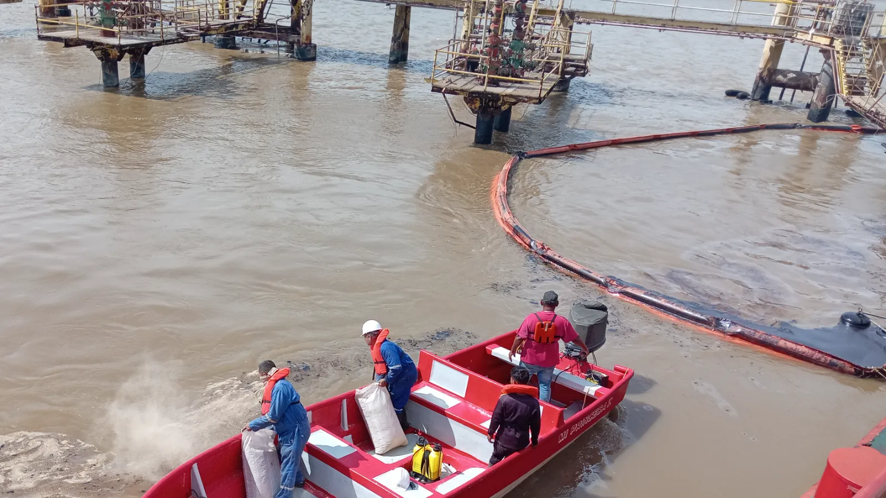
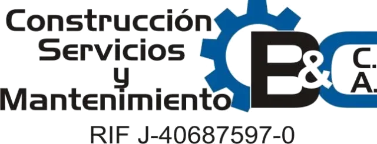
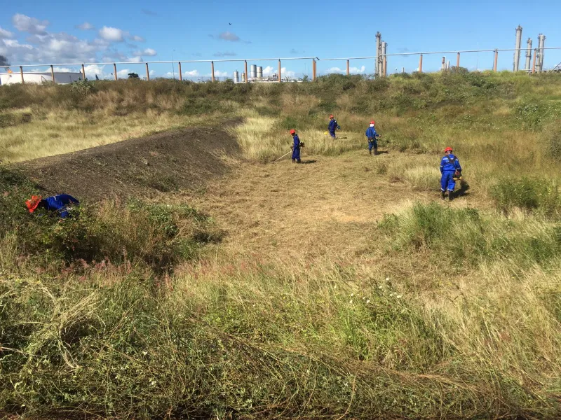
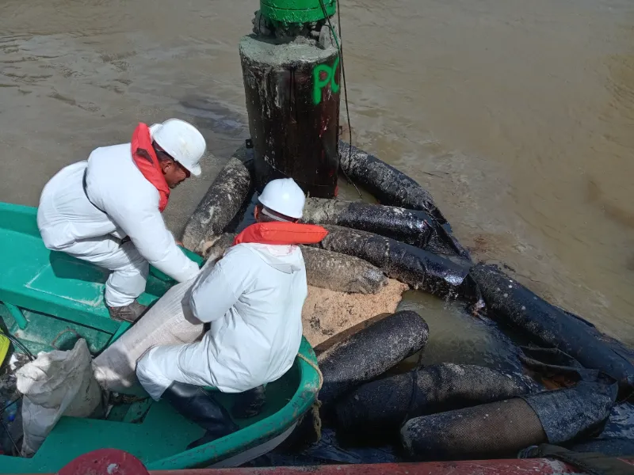
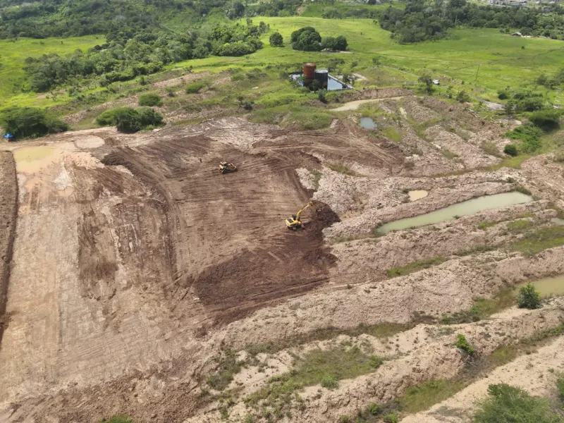
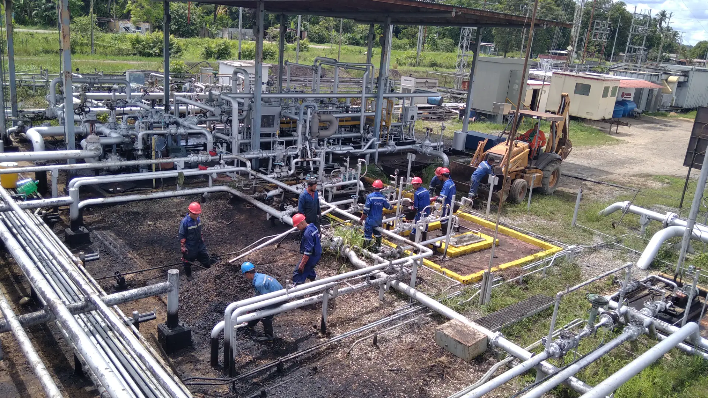

Servicios ambientales para la industria petrolera en Venezuela · Desde 2010 Creamos soluciones sostenibles y estrategias ambientalmente seguras
Protegemos el entorno, optimizamos las operaciones industriales y desarrollamos soluciones ambientales especializadas para la industria petrolera y sectores conexos.
En SAOCA integramos para atender los desafíos operativos de nuestros clientes:
- Experiencia técnica
- Personal calificado
- Equipos especializados
- Gestión ambiental
Nuestra experiencia al servicio de la industria
Desde 2010, trabajamos en el desarrollo de soluciones ambientales y operativas orientadas al manejo responsable de residuos, el saneamiento de áreas impactadas, el control ambiental y el acondicionamiento de fluidos de perforación.
Nuestro compromiso es contribuir a operaciones más seguras, eficientes y ambientalmente responsables.
Nuestros servicios
Soluciones ambientales y operativas para cada desafío industrial
Ofrecemos servicios especializados para prevenir, controlar, mitigar y atender impactos ambientales asociados a las operaciones petroleras e industriales.
-
Saneamiento ambiental
Limpieza, saneamiento y recuperación de áreas afectadas por operaciones industriales y petroleras, incluidas zonas impactadas por hidrocarburos.
-
Manejo, tratamiento y disposición final de desechos
Gestión de desechos peligrosos y no peligrosos, desde su manejo y acondicionamiento hasta su tratamiento y disposición final.
-
Control de vegetación
Despeje, desmalezado y mantenimiento de vegetación en instalaciones industriales, zonas de perforación y derechos de vía.
-
Control ambiental
Seguimiento y control para identificar, prevenir, mitigar y corregir impactos de las operaciones petroleras e industriales.
-
Control de sólidos
Separación de recortes y partículas no deseadas de los fluidos de perforación para mejorar su acondicionamiento.
-
Fluidos de perforación
Manejo, acondicionamiento y tratamiento de fluidos de perforación y de los materiales generados durante las operaciones.
-
Transporte y logística de materiales y residuos
Transporte y movilización de materiales, equipos y residuos asociados a las actividades petroleras.
-
Servicios industriales y apoyo operativo
Construcción y mantenimiento, movimiento de tierras, excavaciones y apoyo técnico a proyectos industriales.
Experiencia en el sector petrolero
Experiencia que respalda nuestra capacidad de respuesta
A lo largo de nuestra trayectoria, hemos participado en proyectos y servicios vinculados con el control ambiental, el saneamiento de áreas, el manejo de desechos, el control de vegetación y las operaciones de perforación.

Nuestra experiencia en campo
Conoce parte de las actividades y capacidades operativas que respaldan nuestros servicios ambientales para la industria petrolera e industrial.
-

Control de vegetación Desmalezado en áreas operacionales Ver servicio -

Manejo de desechos Materiales impregnados con hidrocarburos Ver servicio -

Movimiento de tierras Recuperación y adecuación de áreas Ver servicio
Entre los trabajos descritos en nuestro historial se encuentran:
- Saneamiento de fosas y áreas impactadas
- Manejo y tratamiento de residuos de perforación
- Control ambiental en instalaciones petroleras
- Mantenimiento de vegetación
- Apoyo a operaciones industriales

Compromiso con el servicio
Cada proyecto representa una oportunidad para aplicar nuestra experiencia técnica, capacidad operativa y compromiso con el servicio.
Preguntas frecuentes
Respuestas para iniciar su proyecto
Lo esencial para conocer nuestras soluciones y comenzar una solicitud de servicio.
Ofrecemos soluciones integrales de saneamiento ambiental; manejo, tratamiento y disposición final de desechos peligrosos y no peligrosos; control de vegetación; control ambiental; control de sólidos y fluidos de perforación. Las complementamos con transporte de materiales y residuos y con servicios industriales de apoyo operativo.
Para evaluar su solicitud, necesitamos conocer el tipo de servicio ambiental o industrial requerido, la ubicación de las operaciones, el alcance del trabajo y las condiciones generales del área. Con esta información podemos analizar los requerimientos técnicos y determinar las alternativas de atención más adecuadas para su proyecto.
Evaluamos cada solicitud, definimos el alcance del servicio con los responsables de la operación y asignamos el personal técnico y los equipos que requiere el trabajo. Establecemos la disponibilidad de los equipos de acuerdo con las necesidades y el alcance de cada proyecto.
Puede solicitarla desde el formulario de cotización de nuestra página de contacto. Indíquenos el servicio de interés, la ubicación del proyecto y una descripción del alcance; con esta información evaluamos su requerimiento y preparamos una propuesta adaptada a sus necesidades.
¿Qué servicio ambiental necesita su operación?
Compártanos los requerimientos de su proyecto para evaluar las alternativas de servicio que mejor se adapten a sus necesidades.